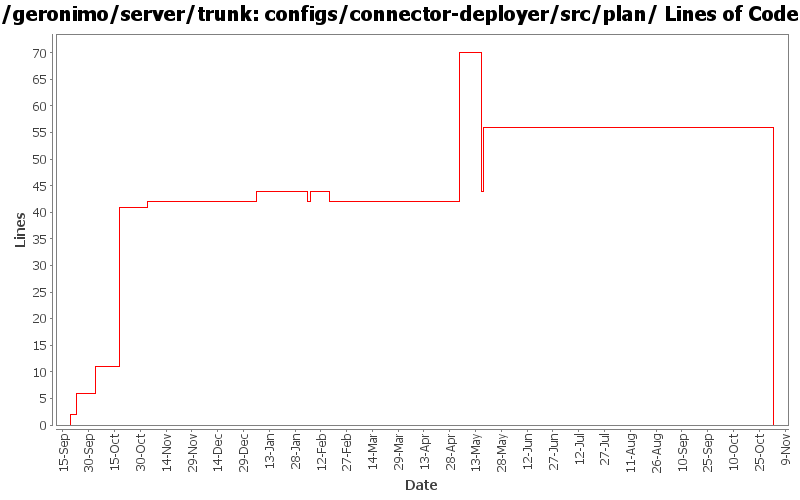

[root]/configs/connector-deployer/src/plan

| Author | Changes | Lines of Code | Lines per Change |
|---|---|---|---|
| Totals | 18 (100.0%) | 104 (100.0%) | 5.7 |
| djencks | 8 (44.4%) | 75 (72.1%) | 9.3 |
| dwoods | 2 (11.1%) | 14 (13.5%) | 7.0 |
| jlaskowski | 1 (5.6%) | 6 (5.8%) | 6.0 |
| rickmcguire | 1 (5.6%) | 4 (3.8%) | 4.0 |
| gdamour | 3 (16.7%) | 2 (1.9%) | 0.6 |
| akulshreshtha | 1 (5.6%) | 2 (1.9%) | 2.0 |
| jdillon | 1 (5.6%) | 1 (1.0%) | 1.0 |
| prasad | 1 (5.6%) | 0 (0.0%) | 0.0 |
GERONIMO-3565. Configs distributed amongst framework/configs and plugins
0 lines of code changed in 1 file:
GERONIMO-3272 eliminate the geronimo-transaction-jta11 module, we are entirely on jta11 now. Also refix logging error for non-NamedXAResource. Also make jpa stuff use spec interfaces and not drag ejb spec into the tm
1 lines of code changed in 1 file:
GERONIMO-3155 Minimal assemblies have doubled in size due to Yoko being included. Added the xml-attribute and resource back into the connector-deployer, but removed the included yoko depend, so the minimal assemblies don't need yoko (they still need the yoko specs for the ORB class.) Added the xml-attribute to the JEE5 server configs as an attribute with the Yoko depend.
12 lines of code changed in 1 file:
GERONIMO-3155 The geronimo-tomcat6-minimal assembly has doubled in size, due to the j2ee-corba-yoko CAR being pulled in. I verified the minimal Tomcat assembly starts and the Servlet-Examples deploy and work.
2 lines of code changed in 1 file:
GERONIMO-3138 ORB as resource-ref
28 lines of code changed in 1 file:
GERONIMO-3027 OpenEjbCorbaRefBuilder is not processing css-links at all.
4 lines of code changed in 1 file:
Std props
dos2unix on some files with inconsistent newlines
1 lines of code changed in 1 file:
Second attempt to change the way the online/offline deployers and the JSR88
deployment driver work. The first attempt was breaking the TCK amd the
eclipse plugin.
Online deployer, i.e. deployer.jar, boots a Kernel to load its dependencies,
e.g. geronimo-deploy-tool, and registers the available ModuleConfigurers with
the DeploymentManager.
ModuleConfigurers to be registered are loaded by the persistent configuration
list jsr88-configurer-config.xml.
In the case of an offline deployment, the online deployer starts the
offline-deployer configuration within the same Kernel. In turn, the
offline-deployer configuration starts a list of configurations to register
the available module builders.
Add a log4j configuration for the online deployer.
DeploymentFactoryBootstrapper is the new JSR88 deployment driver. It boots a
kernel; starts the configuration list jsr88-configurer-config.xml; retrieves
the "actual" DeploymentFactory implementation from the kernel; and delegates
to this retrieved imoplementation.
The JSR88 JAR driver is now named jsr88-deploymentfactory.jar.
This fixes:
* GERONIMO-2794 - Improve online deployer to register ModuleConfigurers from the repository; and
* GERONIMO-2767 - Minimize side effects of the offline deployer
0 lines of code changed in 1 file:
Revert deployer changes as they do break the Eclipse plugin and TCK.
I will investigate offline.
svn merge -r503370:503369 .
2 lines of code changed in 1 file:
Online deployer, i.e. deployer.jar, boots a Kernel to load its dependencies,
e.g. geronimo-deploy-tool, and registers the available ModuleConfigurers with
the DeploymentManager.
ModuleConfigurers to be registered are loaded by the persistent configuration
list jsr88-configurer-config.xml.
In the case of an offline deployment, the online deployer starts the
offline-deployer configuration within the same Kernel. In turn, the
offline-deployer configuration starts a list of configurations to register
the available module builders.
Add a log4j configuration for the online deployer.
This fixes:
* GERONIMO-2794 - Improve online deployer to register ModuleConfigurers from the repository; and
* GERONIMO-2767 - Minimize side effects of the offline deployer
0 lines of code changed in 1 file:
GERONIMO-2686 missed the configs changes in previous commit
2 lines of code changed in 1 file:
GERONIMO-2616 move all tx stuff to the transaction-jta1.1 config.
1 lines of code changed in 1 file:
GERONIMO-2537 All Geronimo source files must be brought in line with the new ASF source header and copyright notice policy
The rest of Geronimo sources migrated
6 lines of code changed in 1 file:
GERONIMO-2499 OPENEJB-280. Allow naming builders to collide on one QNameSet but not both. Hook up the new corba NamingBuilders for corba ejb refs and binding to corba name server
30 lines of code changed in 1 file:
GERONIMO-2486 Added a property geronimoSchemaVersion to the namespaces in all the plans
2 lines of code changed in 1 file:
GERONIMO-2159 adjust dependencies so resource adapters can deploy better
5 lines of code changed in 1 file:
GERONIMO-2427. Make ref builders accept either j2ee 1.4 or jee5 deployment descriptor xml
6 lines of code changed in 1 file:
GERONIMO-2398 Create transaction and connector-deployer configs, clean up a lot of dependency problems, and fix major app client module builder classloader bugs
2 lines of code changed in 1 file: